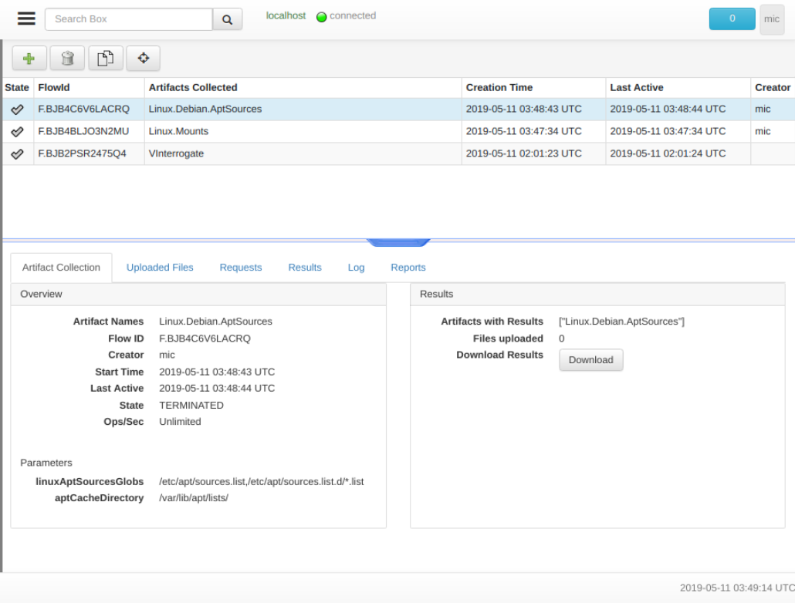
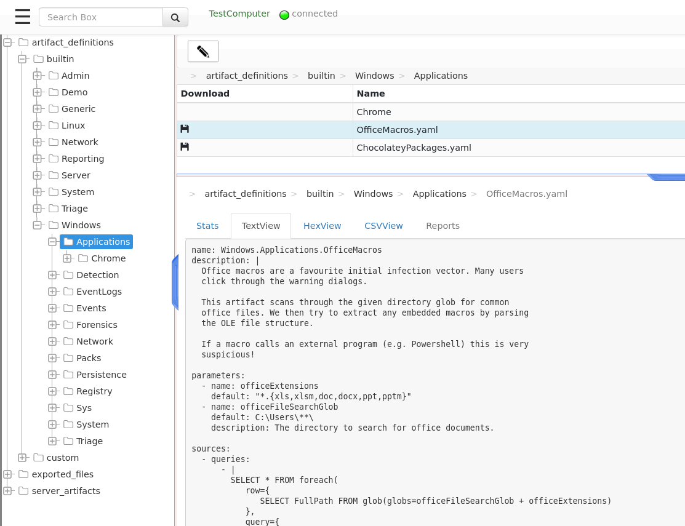

Velociraptor Artifacts
Velociraptor’s main job is to collect Forensic Artifacts. An
artifact is simply a yaml file which tells Velociraptor how to collect
a set of files or information in order to answer a specific question.
Artifact definitions
Artifacts are supposed to be defined and tweaked by the user. Therefore they are defined using YAML in a simple file format.
Below is an example of a typical artifact definition.
name: Windows.Sys.Users
description: |
List User accounts that were logged into the machine in the past by
searching for registry artifacts.
What local or domain users have previously logged into an endpoint?
parameters:
- name: remoteRegKey
default: HKEY_LOCAL_MACHINE\SOFTWARE\Microsoft\Windows NT\CurrentVersion\ProfileList\*
sources:
- precondition:
SELECT OS From info() where OS = 'windows'
queries:
- SELECT "" as Uid, "" as Gid,
lookupSID(
sid=basename(path=Key.FullPath)
) as Name,
Key.FullPath as Description,
ProfileImagePath as Directory,
basename(path=Key.FullPath) as UUID,
Key.Mtime.Sec as Mtime,
"roaming" as Type
FROM read_reg_key(globs=remoteRegKey, accessor="reg")
reports:
- type: CLIENT
template: |
Users that logged in previously.
===============================
{{ .Description }}
The following table shows basic information about the users on this system.
{{ Query "users" "SELECT Name, UUID, Type, Mtime FROM source()" | Table }}
We can see the main sections:
The
nameof the artifact is a dot separated string used to identify the Artifact in the UI. We typically name the artifact using a heirarchical category based naming scheme.The
descriptionsection contains a human readable description of the purpose of this artifact, how it works and when to use it. The description section is searchable in the GUI so you should provide enough context there to assist a user in selcting this artifact.The
parameterssection is a list of parameters provided to the artifact. When the user selects this artifact in the GUI, they are also given the option to tweak these parameters. Parameters may also specify a default value and a helpful description to help users set the correct value.The sources section contains a list of evidence sources. Each source specifies a single VQL query. The query may retrieve specific information or files.
A
preconditionis a VQL query which must be satisfied before the source is collected.The
queriessection is a list of VQL queries, executed one at the time, which produce a single result set (i.e. a table with specified columns and rows). Typically thequeriessection consists of a list ofLETVQL statements followed by a singleSELECT.
Finally the
reportssection specifies a set of report templates to be used to analyze the results collected from the artifact. You can read more about report templates.
At a high level, an artifact answers a specific question. As an investigator we ask questions relevant to our case, and the artifact maps these questions to a mechanical collection providing sufficient evidence to cast light on our question. The Velociraptor GUI allows one to search artifacts by their description section.
The artifact contains a report that helps the user make sense of the
collected evidence. The report presents a human readable post
processing on the collected artifact - collating and correlating
evidence from multiple sources in order to answer the high level
question posed by the artifact.
The purpose of the artifact is to encapsulate expert knowledge into the artifact to both document and guide investigators through the investigation process. Even experienced investigators can benefit from artifacts, since they do not need to worry about forgetting to collect a particular source, or wrongly interpreting some of its finding.
In the above example, the high level question is What domain users
have logged into this endpoint?. To answer this question we extract
registry artifacts created whenever a user gains an interactive logon
session to a machine. The report helps us to understand what the
registry artifacts actually mean. We can see the report can run
further VQL queries to highlight or post process the results, perhaps
drawing our attention to particularly interesting findings.
Viewing previously collected artifacts
Now that we understand what artifacts actually are, we are ready to collect artifacts from our endpoints. We will first discuss how to collect an artifact from a single endpoint, and later discuss how to hunt for the artifacts across the entire fleet.
Once we searched and selected the endpoint of interest, we can switch to the “Collected Artifacts” view.

The screen shows the artifacts previously collected on this endpoint. The screen is split into a top table showing a list of collected artifacts, and a bottom overview pane showing details about each selected artifact in the table above.
The artifacts list table shows an overview of previously collected
artifacts on this endpoint. Each artifact collection operation is
termed a flow in Velociraptor. It has the following columns:
The state of the flow. This can be a tick for completed flows, a clock for pending artifacts or a nuke for artifacts which were collected with critical errors (Artifacts may also have non critical errors so you need to check the logs as well).
The
FlowIdis a unique internal ID given to each flow Velociraptor runs. You will need this ID if you need to compose VQL quries for post processing the flow.The
Artifacts Collectedcolumn is a list of artifacts collected by this flow. It is possible to schedule multiple artifacts to be collected at the same time. This column shows each artifact by name.The
Creation Dateis when the artifact was created. The endpoint may not have been online at the time, so it is possible that the endpoint did not receive the collection request immediately when it was created.The
Last Activedate is when the last response arrived from the endpoint relating to this flow. The difference between this time and the creation time gives us an idea of how long the artifacts actually took to be collected on the endpoint.Finally we learn the user that created the collection. If this column contains a hunt id (of the form
H.XXXX) then this flow was automatically created by the hunt manager.
The artifact details pane
The bottom pane allows us to inspect the flow and the collected
artifacts. It consists of several tabs, the first of which Artifact
Collection tab gives high level overview of the flow. We can see how
many files were uploaded, what artifacts were collected and any
specific artifact parameters that were issued.
In particular that tab also offers a Download Results
button. Clicking this button will create a zip file containing all
relevant information obtained from this artifact. Specifically it
contains a CSV file for each returned VQL query, as well as any file
uploaded by the artifact.
The Uploaded Files tab shows the files uploaded by the artifact’s
VQL. Some artifact as simply file collectors - collecting a bunch of
files for later post processing analysis.
The Results tab shows a table of VQL results from each source. For
artifacts containing multiple sources (or if you collected multiple
artifacts) the selector allows switching between them to view the
result table from each. Since an artifact source is simply a VQL
query, it returns a table with columns specified by the query
itself. Therefore each artifact will procude a different table.
The Logs tab shows any messages logged by the endpoint while
collecting the artifact. Many issues encounted by the endpoint are not
considered fatal, but are nevertheless logged to the server (for
example, if the endpoint attempts to open a file which is locked). You
should look at the tab to assess if you are getting a complete result.
Finally the Reports tab shows the artifact’s report. As described
above, the report is a human readable document explaining the results
of the artifact and performing some post processing.
Collecting an artifact from an endpoint.
We have seen how to examine older artifacts collected from the endpoint, how do we collect newer artifacts?
Clicking the plus button on the toolbar (Collect More Artifacts)
presents the artifacts collection UI.

The UI element presents a search box for finding the desired artifacts. Velociraptor will search for the keywords in the artifact’s description field. A list of matching artifact names is presented below the search box. Clicking on each of these artifacts presents a summary of the artifact on the right hand side. The summary includes the description as well as the parameters the artifact takes and the VQL queries that will be run. The artifact can now be added to the selected artifacts box.
You can set the Ops/Sec value for collecting the artifacts. This
setting controls how aggressively the endpoint will collect the
artifact. For artifacts that collect a lot of files or otherwise
utilize heavy resources on the endpoint, it is advisable to lower this
to reduce endpoint load.
Adding or Editing artifacts through the GUI
Velociraptor comes with a wide selection of built in artifacts, but the real power of Velociraptor’s query language lies in the ability of users to customize and develop their own artifacts - flexibly responding to their own needs.
This can be achieved via the Server Management screen - reachable
from the side bar menu.

The Server Management screen consists of a tree view on the left
hand side showing several high level categories of server
configuration to edit. The artifact_definitions category is used to
manage the server’s artifact repository.
Below the top level we see the builtin and the custom folders. The
builtin folder contains all the artifacts that come with
Velociraptor. The artifacts are simply YAML files. Built in artifacts
are stored in the server binary, while custom artifacts are simply
stored in the Server’s file store (where they can be easily backed up
if needed). You can see the content of the YAML file by selecting the
TextView tab.
Probably the easiest way to get familiar with artifacts is to edit an
existing artifact. Selecting an existing artifact and clicking the
Add/Edit an artifact toolbar button will open the artifact in an
editor.

If you keep the name of the artifact the same, then the saved artifact
will override the default built in one. Changing the name will add the
new artifact to the server repository. Note that custom artifacts are
always stored under the custom path. This way you can always go back
to see the original builtin artifact content.
Saving the artifact will validate it and ensure the VQL syntax is correct. You may then search for it in the artifact collection screen.
Artifact Types
Velociraptor uses VQL for many different purposes. Since Artifacts are a nice way to package VQL queries, there are a number of different types of artifacts. You can read more about the different types of artifacts within Velociraptor here